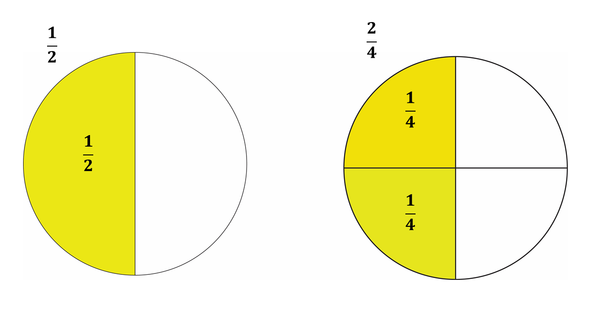
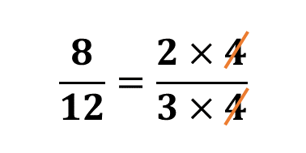

Fractions
Let us first understand what fractions are.
Assume your mother gave you an orange to share with your 2 siblings. You may then decide to use a knife to slice the orange into 3 equal parts.
Each sibling will get one (1) part out of the three (3) equal parts that you sliced with the knife.
We say that each part of the sliced orange has a fraction of \(\frac{1}{3}\), that is, one out of three.
A fraction is defined as a part of a whole.
The orange was one whole (that is, \(1\)), until you sliced it into the various parts.
Below are some examples of fractions.

Fractions are usually written in the form \(\frac{a}{b}\).
\(* \hspace{0.5cm}\)\(\frac{a}{b} \Rightarrow\) You say, \(\mathbf{a}\) over \(\mathbf{b}\), or \(\mathbf{a}\) out of \(\mathbf{b}\). You can also simply say, \(\mathbf{a}\) divided by \(\mathbf{b}\).
Given any fraction, say \(\frac{a}{b}\), the top part (\(\mathbf{a}\)) is called the numerator while the bottom part (\(\mathbf{b}\)) is called the denominator.
When you divide the numerator by the denominator, the value that you obtain is called a quotient.
We will learn more about these definitions in a later lesson.
Remember:
\[\frac{a}{0} = undefined\]
That is, any number divided by zero (0) does not exist in the set of real numbers, hence the denominator of fractions should not be zero (0).
Click to watch the video below for a walk through of the lesson above.
Types of Fractions
Let's now look at the types of fractions that we have.
1. Common (Proper) Fractions
Common fractions are fractions whose numerator is smaller (or less) than the denominator.
Examples of common fractions are \(\frac{1}{2}\), \(\frac{1}{3}\), \(\frac{1}{4}\),\(\frac{1}{5}\), etc.
Common fractions usually take their names from the number of parts that the whole is divided into. So for instance:
\(*\) \(\frac{1}{2} \Rightarrow\) is usually called one-half
\(*\) \(\frac{2}{3} \Rightarrow\) is usually called two-third
\(*\) \(\frac{1}{4} \Rightarrow\) is usually called one-fourth
And so on.
Common fractions are sometimes called proper fractions.
2. Improper Fractions
Improper fractions on the other hand are fractions whose numerators are larger (or bigger) than their denominators.
Examples of improper fractions are as follows:
\(*\) \(\frac{12}{5} \Rightarrow\) you say, twelve divided by five, or twelve over five.
\(*\) \(\frac{22}{7} \Rightarrow\) you say, twenty-two divided by seven, or twenty-two over seven.
\(*\) \(\frac{13}{12}\)
You are required to learn how to change improper fractions to mixed fractions.
3. Mixed Fractions
Mixed fractions are fractions which include a combination of a whole number and a proper fraction (or common fraction).
Examples of mixed fractions are as follows:
\(*\) \(2\frac{2}{5} \Rightarrow\) which is the mixed fraction you get when you convert \(\frac{12}{5}\).
\(\hspace{0.5cm}\)You say, two whole number, two over five.
\(*\) \(3\frac{1}{7} \Rightarrow\) which is the mixed fraction you get when you convert \(\frac{22}{7}\)
\(\hspace{0.5cm}\) You say, three whole number, one over seven.
\(*\) \(1\frac{1}{12} \Rightarrow\) which is the mixed fraction you get when you convert \(\frac{13}{12}\)
We will learn in a later lesson, how to change an improper fraction to a mixed fraction, and vice versa. In Mathematics, it is always a good practice to change improper fractions to mixed fractions.
Click to watch the video below for a walk through of the lesson above.
Quick Test
Test yourself on what you have learnt so far. Click on the link below when your are ready.
Equivalent Fractions
Consider the two diagrams below.
The first diagram (Diagram A) is a whole (1) divided into 2 equal parts. Each part as a fraction is written as \(\frac{1}{2}\), that is, one out of two as learnt early on.
The second diagram (Diagram B) is also a whole (1) divided into 4 equal parts. Each part as a fraction is written as \(\frac{1}{4}\), that is one out of four. Hence, when two parts are shaded, the shaded (coloured) part is two out of four (that is \(\frac{2}{4}\)).
It can therefore be deduced from the two figures above that:
\[\frac{1}{2} = \frac{2}{4}\]
These two fractions are called equivalent fractions.
Equivalent fractions are fractions which have the same value but different numerators and denominators.
Examples of other equivalent fractions to \(\frac{1}{2}\) are as follows:
\(*\) \(\frac{3}{6}\)
\(*\) \(\frac{4}{8}\)
\(*\) \(\frac{5}{10}\)
And so on.
We will learn how to find equivalent ratios in the next section.
Finding Equivalent Fractions
In Mathematics, any number multiplied by one (1) will give the number itself.
Example:
\(\frac{1}{2} \times 1 = \frac{1}{2}\)
Also, any number divided by itself will give us one (1).
\(*\) \(\frac{2}{2} = 1 \)
\(*\) \(\frac{3}{3} = 1 \)
\(*\) \(\frac{4}{4} = 1 \)
To find the equivalent fractions of any given fraction, you will need to express the number one (1) as any number divided by itself (as above), and multiply it to the given fraction. The resulting fraction becomes the equivalent fraction of the fraction originally given.
Consider the example below:
Example 1
Find three equivalent ratios to \(\frac{2}{3}\)
Solution
Fraction given \(\Rightarrow \frac{2}{3}\)
\(1 = \frac{2}{2} = \frac{3}{3} =\frac{4}{4}\)
Equivalent fractions:
\(\Rightarrow \frac{2}{3} \times \frac{2}{2} = \mathbf{\frac{4}{6}}\)
\(\Rightarrow \frac{2}{3} \times \frac{3}{3} = \mathbf{\frac{6}{9}}\)
\(\Rightarrow \frac{2}{3} \times \frac{4}{4} = \mathbf{\frac{8}{12}}\)
\(\therefore\) 3 equivalent ratios to \(\frac{2}{3}\) are \(\mathbf{\frac{4}{6}}, \mathbf{\frac{6}{9}}\) and \(\mathbf{\frac{8}{12}}\)
Quick Test
Test yourself on what you have learnt so far. Click on the link below when your are ready.
Simplifying Fractions
When solving questions in Mathematics, it is always best practice to leave fractions in their simplest form.
Let's now learn how to express fractions in their lowest term.
To express fractions in their simplest form.
1. You can first express the numerator and denominator as a product of their HCF (Highest Common Factor) and another number.
For instance, in expressing \(\frac{8}{12}\) in its simplest form, we have:
\(\frac{8}{12} = \frac{2 \times 4}{3 \times 4}\)
2. We can rewrite the equation above in a different form as shown below:
\(\frac{8}{12} = \frac{2}{3} \times \frac{4}{4}\)
Remember that,
Any number divided by itself gives one. That is \(\frac{4}{4} = 1\)
\(\Rightarrow \frac{8}{12} = \frac{2}{3} \times 1\)
\(\therefore \frac{8}{12} = \frac{2}{3}\)
You can also say that, since the HCF is found at the numerator side and again at the denominator side, it will cancel itselt out. As shown in the image below:
Quick Test
Test yourself on what you have learnt so far. Click on the link below when your are ready.
Converting Fractions
In our previous lesson, we learnt that fractions are a way to represent parts of a whole. Sometimes, we need to work with mixed fractions (a whole number and a fraction combined) and improper fractions (where the numerator is larger than the denominator). Learning to convert between these forms helps in various calculations and simplifies working with fractions.
What is a Mixed Fraction?
A mixed fraction has a whole number part and a fraction part. For example, \(2\frac{1}{3}\) means 2 whole parts and a fraction \(\frac{1}{3}\).
What is an Improper Fraction?
An improper fraction has a numerator that is equal to or larger than the denominator, such as \(\frac{7}{3}\).
Let's now learn how to convert between these two types of fractions.
How to Convert Mixed Fractions to Improper Fractions
Follow the steps below when you are converting a mixed fraction to an improper fraction.
1. Multiply the whole number by the denominator of the fraction part.
2. Add the numerator of the fraction to this result.
3. Place the sum over the original denominator.
Example 1
Convert \(2\frac{1}{3}\) to an improper fraction.
Solution
Let's follow the steps outlined above.
Mixed fraction given \(\Rightarrow 2\frac{1}{3}\)
The whole number part \(= 2\)
The fraction part \(= \frac{1}{3}\)
Step 1:
Multiply the whole number by the denominator of the fraction.
\(2 \times 3 = 6\)
Step 2:
Add the numerator of the fraction to the result.
\(6 + 1 = 7\)
Step 3:
Place the sum over the original denominator.
\(\Rightarrow \frac{7}{3}\)
\(\therefore \ \ \mathbb{2\frac{1}{3} = \frac{7}{3}}\)
How to Convert An Improper Fraction to a Mixed Fractions
Follow the steps below when you are converting an improper fraction to a mixed fraction.
1. Divide the numerator by the denominator.
2. The quotient is the whole number part, and the remainder becomes the numerator of the fraction part.
3. Keep the original denominator.
Example 1
Convert \(\frac{7}{3}\) to a mixed fraction.
Solution
Let's follow the steps outlined above.
Improper fraction given \(\Rightarrow\) \(\frac{7}{3}\)
Step 1:
Divide the numerator by the denominator.
\(7 \div 3 = 2\) remainder 1
Step 2:
The quotient is the whole number part, and the remainder becomes the numerator of the fraction part.
Quotient \(\Rightarrow 2\)
remainer \(\Rightarrow 1\)
Step 3:
Keep the original denominator.
Original denominator \(\Rightarrow 3\)
\(\therefore \frac{7}{3} = 2\frac{1}{3}\)
Practice Questions
Practice the questions below using the steps outlined above.
1. Convert \(3\frac{2}{5}\) to an improper fraction.
2. Convert \(\frac{11}{4}\) to a mixed fraction.
3. Convert \(5\frac{3}{7}\) to an improper fraction.
4. Convert \(4\frac{3}{8}\) to an improper fraction.
5. Convert \(\frac{13}{5}\) to a mixed fraction.
6. Convert \(6\frac{5}{9}\) to an improper fraction.
7. Convert \(\frac{22}{7}\) to a mixed fraction.
8. Convert \(3\frac{4}{5}\) to an improper fraction.
9. Convert \(\frac{17}{6}\) to a mixed fraction.
10. Convert \(5\frac{2}{3}\) to an improper fraction.
Quick Test
Test yourself on what you have learnt so far. Click on the link below when your are ready.
Kindly contact the administrator on 0208711375 for the link to the test.
To advertise on our website kindly call on 0208711375 or 0249969740.